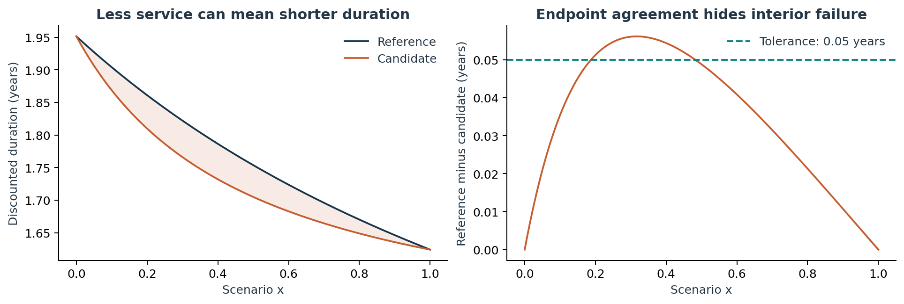
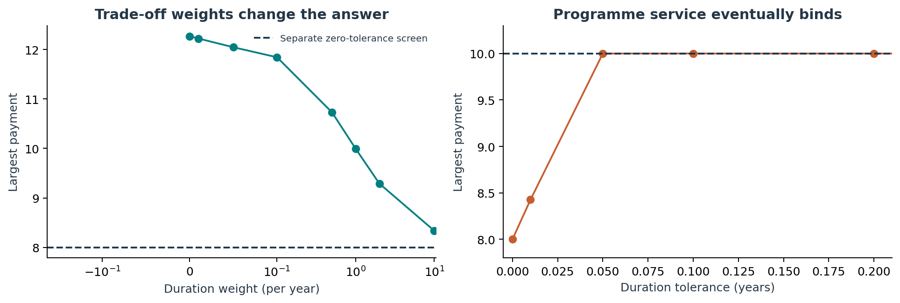
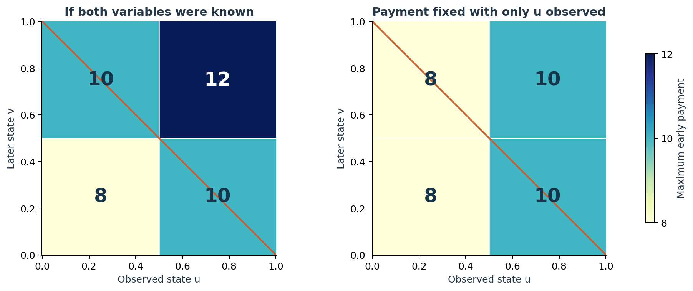

Research manuscript and reproducibility supplement
15 October 2026 | Version 3.0
State-contingent debt changes both the amount and the timing of sovereign payments. We study exact verification of a declared comparability screen, separating mathematical compliance from institutional judgement. With fixed old claims, positive discount factors and piecewise-affine new service, present-value and programme-service comparisons are affine, while duration produces a quadratic inequality over each reachable trigger region. An endpoint-passing construction fails duration at every interior state despite reducing every payment; a perturbation makes both endpoint tests pass strictly while retaining an interior failure. We explain this conflict through an exact payment-removal identity and a necessary-and-sufficient condition for a duration screen to accept all componentwise reductions. Scalar payment design yields complete feasible intervals, including floors; partial information intersects these intervals across indistinguishable states. The original early-upside example has a sharp cap of 8, versus 14.535 under present value alone and 11.842 under a specified weighted rule. A two-state-variable, four-date example combines three interacting triggers, six reachable regimes and a binding observation constraint. A second exact family uses unmatched old claims and nonproportional later payments: an oblique trigger changes the binding constraint and lowers the implementable cap from 25 to \(110/7\), with an exact switch at uplift \(75/7\). An input-bound implementation and a separate low-dimensional checker independently reconstruct certificate domains and trigger regions before checking the calculations. A structured primary-source review positions the contribution as an exact, application-focused methods synthesis. The results do not authenticate contracts, recover undisclosed institutional preferences, establish social welfare or issue a country-level verdict.
State-contingent sovereign debt:
payment dominance, exact comparability and implementable bounds
Research manuscript and reproducibility supplement
15 October 2026 | Version 3.0
Anonymous | Prepared for Evidence Press
doi:10.5281/zenodo.23392424
When payments depend on future economic outcomes, an agreement that appears comparable in a baseline scenario may cease to be so elsewhere. The verification question is precise: given complete old and new cash-flow maps, a scenario set, discount conventions and an acceptance rule, does the rule hold in every reachable state? The design question adds a decision: which payments can be promised without violating that rule, using only the information available when the promise is fixed?
The central difficulty is not only uncertainty about amounts. Duration measures relative timing. A candidate can pay less at every date and nevertheless have a shorter discounted duration. Consequently, a rule which insists separately on at least as much duration extension can reject an unambiguous reduction in the candidate’s payment obligations. The paper develops this observation into a general diagnostic, then shows how the resulting constraints interact with payout caps and observation dates.
The acceptance rule is an input, not something inferred from the word “comparable”. The separate minimum-effort screen used for most proofs is a transparent mathematical rule; institutional comparability can allow substitutions and consider other contractual provisions. The public Paris Club illustration later in the paper demonstrates that distinction directly. Verification of a rule and justification of a rule are separate tasks.
The paper first establishes its relation to prior work and defines the accounting model. It then develops the exact verification argument, the endpoint counterexample and the general duration-removal analysis. Payment design and sensitivity lead to a complete multi-regime example. The final sections explain extensions, public-source limits and computational assurance. All synthetic quantities are constructed common monetary units; none is an estimate of a named sovereign’s liabilities.
Institutional burden sharing. The Paris Club’s published methodology defines the accounting indicators and permits substitution between them. Its institutional judgement is broader than a coordinatewise numerical test. The GSDR compendium records discussion of ex ante assessment, transparent triggers, two-sided adjustments, caps and possible reopening. These are reasons to specify the acceptance rule explicitly; they do not determine a unique mathematical acceptance set (Paris Club, n.d.; GSDR, 2026). In particular, neither source supplies the weighted coefficient used in our example.
Contract design and risk sharing. The IMF’s 2017 policy paper distinguishes instruments which link principal or coupons to economic variables from instruments which extend maturities after a trigger. It also describes data integrity, market liquidity, incentives and investor demand as design constraints. Cohen et al. (2020, especially p. 11) already discuss caps and floors, lagged indicators and excessive upside exposure. The present paper therefore does not claim that contingent payments, transparent triggers or payout caps are new. It asks how to compute an exact feasible payment once a rule and a timing pattern have been fixed.
Measurement and valuation. Kozack (2005, official abstract) stresses the sensitivity of restructuring assessments to discount-rate choice. Asonuma, Niepelt and Rancière (2017, section II; published 2023) distinguish a recovery measure based on old contractual cash flows discounted at the exit yield from a measure based on observed old and new prices. They also study maturity-related variation in creditor losses. Our contractual accounting exercise supplies neither a traded price nor an empirical estimate of investor losses. Its common discount factors are declared comparison conventions. Any claim about market equivalence would need additional inputs and an appropriate valuation model.
Robust decisions with partial information. Ben-Tal et al. (2004, pp. 352–354) distinguish decisions fixed in advance from decisions that may depend on subsequently revealed information, and explicitly allow decision-specific information sets. Their quantifier distinction between one common decision and a state-dependent decision contains the essential logic of our information restriction. Ben-Tal, Boyd and Nemirovski (2006, pp. 64–65) formulate decision rules using the data available to each decision. Our scalar interval intersection is an exact, elementary specialisation. It introduces neither nonanticipation nor a new general robust-optimisation method. Gorissen, Yanıkoğlu and den Hertog (2015, sections 2–4 and 6) emphasise uncertainty-set selection, the information basis and the danger of treating deterministic reformulations as interchangeable after robustification.
This separation also clarifies the relationship to efficiency. Powell (2026, sections 2–3) argues that strict comparability can ignore creditor heterogeneity and alter incentives. His strict equal-PV setting is not identical to our three-veto screen. Our duration result adds an explicit property of the latter rule: an accepted stream can become unacceptable after every payment has been reduced. This is a statement about the rule’s ordering of cash flows. It does not establish a welfare loss, an optimal restructuring or the appropriate distribution of relief.
| Result | Nearest established machinery | Specific role and claim ceiling here |
|---|---|---|
| Metric definitions | Paris Club formula box; standard discounted cash-flow duration | Consistent normalisation by old PV and old programme service. No new financial metric. |
| Discount derivative identity | Standard differentiation of discounted value; discount-rate sensitivity in Kozack | Applies the derivative to normalised relative recoveries, including both old profiles. A transparent application-specific identity, not a discovery of duration. |
| Affine/quadratic reduction | Positive-denominator clearing and polynomial algebra | Identifies the exact degree and hypotheses of the separate comparability screen. Does not cover arbitrary acceptance rules. |
| Face-stationary enumeration | First-order stationarity on polytope faces; established quadratic programming | A self-contained exact small-instance proof, including singular cases. No efficiency or algorithmic priority claim. |
| Endpoint failure | Nonlinear functions can have interior extrema | Explicit all-positive-discount debt construction, with componentwise lower payments. Exact construction priority remains unresolved. |
| Removal identity and dominance threshold | Weighted means, covariance and ordering | Exact criterion for when payment reductions help or hurt duration; identifies when the separate screen is downward closed. Elementary specialisation, developed here for interpretation. |
| Payment interval and weighted cap | One-variable linear/quadratic inequalities; existing SCDI cap design | Complete floors, caps and consistency cases, with sharp values for declared contracts. No universal recommended cap. |
| Information-constrained bound | Adjustable robust optimisation, Ben-Tal et al. (2004, 2006) | Closed-form interval intersection over observation classes. The multi-regime example makes the information loss explicit. |
| General algebraic extension | Real quantifier elimination, Collins (1975) | A decidability formulation only. No generic CAD implementation and no tractability claim. |
The defensible contribution is a coherent, auditable application of these ingredients, centred on the consequences of a duration veto and on implementable payment design. It is not a claimed advance in general optimisation theory. The strongest alternative assessment is that the ingredients and constructions are too elementary to constitute a substantial original research contribution. That objection remains relevant even after the calculations and exposition are improved. The new evidence establishes what the models imply, not how a journal or assessment panel should rate them.
The research used a structured English-language primary-source search completed on 15 October 2026: institutional definitions; contingent-instrument design; restructuring valuation; robust optimisation; and the exact mathematical mechanisms above. Exact titles, payment-dominance formulations and trigger/cap combinations were searched, and references in the closest sources supplied additional leads. Relevant full-text passages were inspected where available. The source register records the version, locator, supported claim and access status of each source; inaccessible texts are listed separately. Semantic Scholar returned an unauthenticated rate limit on the final targeted queries, so no database coverage is claimed from that route.
This is an extensive, documented review of the closest literature, not a PRISMA-style systematic review or proof that every relevant publication has been found. No exhaustive priority claim follows from it. Collins is cited for the established algorithm through the publisher record; its subscription chapter was not newly read in full. Kozack’s use is restricted to the official abstract. We make no theorem-level inference from an inaccessible source. The arguments on which our own universal claims depend are supplied below.
Fix a valuation date, a finite set of dates \(t\geq0\), a common accounting currency, an IMF-programme window \(\mathcal T_P\), and the claims included for each creditor agreement. A state \(x\in\mathcal X\) describes the relevant economic path, trigger history and contractual observations. It need not carry a probability. Contractual cash flows are not market prices or forecasts of what will actually be collected following another default.
Let \(a_{it}\geq0\) be creditor \(i\)’s old contractual service and \(c_{it}(x)\geq0\) its new service. Include principal, interest and any payment to the creditor that the declared accounting perimeter includes, such as an exchange payment or consent fee. Where arrears are treated as due at the valuation date, represent them at \(t=0\) under an explicit convention. The affine theorem below assumes old claims and currency conversion are fixed. Floating old claims or state-dependent conversion require the more general rational-function formulation.
Let \(d_t>0\) be the agreed discount factors. Define \[\begin{align} O_i&=\sum_t d_t a_{it}, &V_i(x)&=\sum_t d_t c_{it}(x),\\ M_i(x)&=\sum_t t d_t c_{it}(x), &D_i(x)&=M_i(x)/V_i(x),\\ D_i^0&=\frac{\sum_t t d_t a_{it}}{O_i}, & S_i(x)&=\sum_{t\in\mathcal T_P}c_{it}(x),\qquad S_i^0=\sum_{t\in\mathcal T_P}a_{it}. \end{align}\] The measure \(D_i\) is discounted cash-flow (Macaulay) duration. It is measured in years, not a payment amount or market price. Assume \(O_i,V_i(x),S_i^0>0\) wherever these ratios are used. A wholly cancelled stream has undefined duration in this representation; a rule must specify how to treat it. A zero old programme-service denominator likewise requires an absolute-service or other separately declared rule. These cases must not receive invented ratios.
Use positive numbers for greater financial relief: \[\begin{equation} \label{eq:metrics} H_i=1-\frac{V_i}{O_i},\qquad L_i=1-\frac{S_i}{S_i^0},\qquad E_i=D_i-D_i^0. \end{equation}\] The first two signs reverse the Paris Club formula box’s post/pre-minus-one convention. Crucially, present value is divided by old present value, and programme service by old programme service; neither denominator is automatically old principal (Paris Club, n.d., Box 1).
Let \(R\) denote the reference agreement. One explicitly declared financial screen is \[\begin{equation} \label{eq:strict} H_i\geq H_R-\epsilon_V,\qquad L_i\geq L_R-\epsilon_S,\qquad E_i\geq E_R-\epsilon_D. \end{equation}\] Require these inequalities for every admissible state and discount specification. Here \(\epsilon_V,\epsilon_S\geq0\) are fractions and \(\epsilon_D\geq0\) is measured in years. This is a directional minimum-effort screen, not equality between creditors. It is not an assertion that the Paris Club uses three independent vetoes. Unless specified, examples use zero tolerances.
A more general declared rule specifies an acceptance set \(\mathcal A\) for the vector of metric differences, possibly together with non-financial constraints. A weighted example is \[\begin{equation} \label{eq:weighted} w_H(H_i-H_R)+w_L(L_i-L_R)+w_D(E_i-E_R)\geq-\epsilon, \qquad w_H,w_L,w_D\geq0. \end{equation}\] The weights, units and scope must be agreed. They are not inferred from public examples. Sections 5 and 13 distinguish the separate-screen and general-rule algorithms; Section 9.1 solves a weighted payment problem explicitly.
For a common flat annual discount rate \(r>-1\), take \(d_t(r)=(1+r)^{-t}\), with cash flows themselves fixed as \(r\) varies. Write \[\begin{equation} \rho_i(x,r)=\frac{V_i(x,r)/O_i(r)}{V_R(x,r)/O_R(r)}. \end{equation}\] This compares the fractions of old present value retained by the two agreements.
Theorem 1 (Discount sensitivity identity). For finite nonnegative payment streams with positive present values, \[\begin{equation} \label{eq:rateidentity} E_i(x,r)-E_R(x,r)=-(1+r)\frac{\partial}{\partial r}\log\rho_i(x,r). \end{equation}\] Consequently, on \([r_-,r_+]\subset(-1,\infty)\) the zero-tolerance screen holds for every rate and state if and only if, for every state, \[\begin{equation} \label{eq:rateconditions} L_i\geq L_R,\qquad \rho_i(x,r_-)\leq1,\qquad \partial_r\rho_i(x,r)\leq0\quad\text{throughout }[r_-,r_+]. \end{equation}\]
Proof. Differentiation gives \(\partial_r V_i=-M_i/(1+r)\), so \(D_i=-(1+r)\partial_r\log V_i\). Apply the same identity to the two old streams and the reference new stream, then subtract. This proves [eq:rateidentity]. The duration inequality is equivalent to non-increasing \(\rho_i\). Under that condition the largest relative recovery occurs at \(r_-\), so the one present-value check there is necessary and sufficient for the entire interval. Programme service is undiscounted and is checked separately. ◻
This theorem does not justify checking duration only at the two endpoint rates. It identifies the derivative condition that must hold between them. With duration tolerance \(\epsilon_D\), the equivalent derivative bound is \(\partial_r\log\rho_i\leq\epsilon_D/(1+r)\); equivalently, \(\rho_i/(1+r)^{\epsilon_D}\) is non-increasing. A present-value tolerance changes the level test and must be retained separately.
For integer dates set \(z=(1+r)^{-1}\). All present values become polynomials in \(z\). Define \[\begin{equation} F(z)=V_i(z)O_R(z),\qquad G(z)=V_R(z)O_i(z)>0. \end{equation}\] The duration condition is precisely \[\begin{equation} \label{eq:ratepoly} F'(z)G(z)-F(z)G'(z)\geq0. \end{equation}\] For fixed \(x\), this is a univariate polynomial sign question on a specified interval. Endpoint and stationary-point evaluation with exact real-root isolation decides it. The identity is proved algebraically above; finite regression evidence is a separate assurance layer. Rational dates can be expressed on a common time grid. Continuous rates combined with several economic state variables require a multivariate polynomial method, not the fixed-discount quadratic routine below.
Suppose \(\mathcal X\) is partitioned into finitely many reachable regimes. Each regime has a nonempty bounded rational polyhedral closure, and, on that regime, every new cash flow is affine: \[\begin{equation} c_{it}(x)=a_{it}+b_{it}^{\mathsf T}x. \end{equation}\] Discount factors are fixed positive rationals and old streams are fixed. For each regime require present values to remain positive on the closure. This last assumption ensures that the extended branch’s ratios remain defined at limit points.
The regimes must combine all creditors’ triggers. They must also incorporate payment caps, observation lags and irreversible trigger history when those alter the formula. Products from variable coupons or capitalised interest may produce polynomial rather than affine payments; those contracts fall under Section 13 unless their chosen regime really is affine.
Theorem 2 (Affine/quadratic reduction). On each such regime, the two first inequalities in [eq:strict] are affine. The duration inequality is equivalent to \[\begin{equation} \label{eq:q} q(x):=M_i(x)V_R(x)-M_R(x)V_i(x) -(D_i^0-D_R^0-\epsilon_D)V_i(x)V_R(x)\geq0, \end{equation}\] where \(q\) is quadratic or lower degree. Thus exact verification reduces to affine minimisation and quadratic nonnegativity over finitely many bounded rational polytopes.
Proof. The present-value condition becomes \(V_i\leq O_i(V_R/O_R+\epsilon_V)\); the programme condition becomes \(S_i\leq S_i^0(S_R/S_R^0+\epsilon_S)\). All denominators here are positive constants. For duration, multiply by \(V_iV_R>0\) and rearrange to obtain [eq:q]. Affine moments and present values give degree at most two. ◻
An affine extremum occurs at a vertex. A quadratic minimum need not. The following exact method covers positive-semidefinite, indefinite and singular quadratics.
Lemma 3 (Finite face-stationary certificate). Let \(P\subset\mathbb R^n\) be a nonempty bounded rational polytope and let \(q(x)=x^{\mathsf T}Qx+\ell^{\mathsf T}x+c\), with rational symmetric \(Q\). For each face, impose its affine-hull equations \(Ex=f\) and the tangential stationarity equations \[\begin{equation} \label{eq:stationary} N^{\mathsf T}(2Qx+\ell)=0, \end{equation}\] where the columns of \(N\) span the nullspace of \(E\). When this linear system has a solution in \(P\) lying on the specified face, choose any such rational solution. Include the vertices. The minimum of the resulting finite list of values is \(\min_Pq\).
Proof. Compactness gives a minimiser \(x_*\). It lies in the relative interior of its minimal face. Hence the directional derivative vanishes in every tangent direction, giving [eq:stationary]. All equations are rational and linear. Any nonempty rational polyhedron of solutions has a rational point.
It remains to show that an arbitrary point chosen from a face’s stationary solution set has the same value as every other point in that set. If \(x,y\) are two such points and \(h=y-x\), then \(h\) is tangent. Stationarity at both points gives \(h^{\mathsf T}(2Qx+\ell)=0\) and \(h^{\mathsf T}(2Qy+\ell)=0\). Subtraction gives \(h^{\mathsf T}Qh=0\). Therefore \(q(y)-q(x)=h^{\mathsf T}(2Qx+\ell)+h^{\mathsf T}Qh=0\). The chosen point on the minimising face has value \(q(x_*)\). Every listed point is feasible, so none has a smaller value. The argument includes singular Hessians and zero-dimensional faces. ◻
The reference implementation enumerates independent active-constraint subsets of size at most \(n\); these cover all face affine hulls. It tests feasibility by exact rational vertex enumeration. It may enumerate duplicate faces, which affects speed but not correctness. Its cost is exponential; no polynomial-time claim is made.
First establish that a branch defined with strict inequalities is reachable. For a nonempty polyhedral branch, check its continuous affine formula on its actual closure, retaining separate formulae for adjacent branches. If a continuous inequality is negative at a closure point, it is negative at reachable points approaching that point; if it is nonnegative throughout the branch, it is nonnegative on the closure. An impossible branch must not be made reachable merely by replacing a strict inequality with a weak one. Where a limiting present value is zero, use direct rational sign reasoning or the general formulation rather than dividing by zero.
Take identical old claims of 100 at year 1. New payments occur only in years 1 and 3, and the programme contains year 1. For \(x\in[0,1]\), define \[\begin{equation} \label{eq:interiorflows} (c_{R1},c_{R3})=(2+2x,2),\qquad (c_{i1},c_{i3})=(1+3x,1+x). \end{equation}\] At \(x=0\) the candidate is one half of the reference; at \(x=1\) they coincide. All three separate tests pass at both endpoints for any common positive discount factors.
Moreover, at every state the candidate’s payment is no larger at either date: the reference-minus-candidate difference is \((1-x,1-x)\). Therefore the present-value and programme-flow tests pass throughout the interval. Yet, for positive \(d_1,d_3\), \[\begin{equation} M_iV_R-M_RV_i=4d_1d_3x(x-1)<0\qquad(0<x<1). \end{equation}\] The old durations are equal, so duration fails at every interior state. At zero discount and \(x=1/2\), the two new durations are \[\begin{equation} D_R=\frac{3+3(2)}{3+2}=\frac95=1.8,\qquad D_i=\frac{5/2+3(3/2)}{5/2+3/2}=\frac74=1.75. \end{equation}\] At 5%, the cleared quadratic has its exact minimum \(- (20/21)^4\) at \(x=1/2\). This minimises the cleared numerator; it is not claimed to maximise the difference in duration ratios.
This is also a warning about the separate duration screen. Reducing every payment can shorten the remaining stream’s weighted duration. A rule that always accepts pointwise reductions in sovereign payments cannot simultaneously impose duration extension as an uncompensated veto. The example establishes the incompatibility directly. It does not establish that lower payments harm the debtor; it explains why an assessment may allow substitution between criteria.
The failure does not depend on equality at the two tested endpoints. Replace only the candidate’s year-1 payment by \(1+3x-\eta\), leaving its year-3 payment \(1+x\), where \(0<\eta<1/4\). The candidate remains nonnegative and no larger than the reference at either date. Direct expansion gives \[\begin{equation} \label{eq:strictendpoint} M_iV_R-M_RV_i=4d_1d_3\{x(x-1)+\eta\}. \end{equation}\] This expression is strictly positive at \(x=0\) and \(x=1\), but equals \(4d_1d_3(\eta-1/4)<0\) at \(x=1/2\). Thus both endpoint duration tests pass strictly while an interior state fails, for every pair of positive discount factors. The retained exact regression uses \(\eta=1/8\); the displayed algebra, rather than that finite test, proves the whole parameter range.
The counterexample is part of a more general phenomenon. Duration is the mean date of the remaining discounted payments. Removing disproportionately late payments can move that mean earlier, even though every nominal payment falls. We now give an exact condition and identify the tolerance needed to avoid that conflict. These are weighted-average identities specialised to the declared financial screen.
Proposition 4 (Exact effect of removing payments). Let \(b_t\geq0\) be a nonzero stream with positive discount factors \(d_t\), and remove \(0\leq\delta_t\leq b_t\), leaving positive present value. Set \[V=\sum_t d_tb_t,\quad M=\sum_ttd_tb_t,\quad \Delta V=\sum_td_t\delta_t,\quad\Delta M=\sum_ttd_t\delta_t,\quad D=M/V.\] Then \[\begin{equation} \label{eq:removal} D(b-\delta)-D(b)=\frac{D\Delta V-\Delta M}{V-\Delta V}. \end{equation}\] If \(\Delta V>0\), duration increases, is unchanged, or decreases precisely when the duration of the removed stream \(\Delta M/\Delta V\) is smaller than, equal to, or greater than \(D\).
Proof. Subtract \(M/V\) from \((M-\Delta M)/(V-\Delta V)\) and simplify. Both denominators are positive. This proves the identity and the sign statement. If no value is removed, both changes are zero. ◻
Write \(w_t=d_tb_t/V\) on the positive support of \(b\), and \(\lambda_t=\delta_t/b_t\). The weights \(w_t\) sum to one but do not represent probabilities of economic states. Equation [eq:removal] becomes \[\begin{equation} \label{eq:covariance} D(b-\delta)-D(b)=-\frac{\operatorname{Cov}_{w}(t,\lambda_t)}{1-\mathbb E_w\lambda_t}. \end{equation}\] Thus uniform proportional reductions preserve duration. If relative reductions are non-increasing with payment date, duration cannot fall. If they are non-decreasing, duration cannot rise. The sign follows from \[\operatorname{Cov}_w(t,\lambda_t)=\tfrac12\sum_{s,t}w_sw_t(s-t)(\lambda_s-\lambda_t).\] Strict change requires a pair of positive-weight dates with strictly different dates and relative reductions. In the midpoint counterexample, removing \(0.5\) at each of years 1 and 3 removes a larger fraction of the late payment: \(1/4\) rather than \(1/6\). The duration decrease is therefore expected from [eq:covariance]; it is not a numerical anomaly.
Proposition 5 (Exact downward-closure criterion). Fix the old candidate stream, the reference agreement and the discount factors. Let a candidate stream \(b\) pass the separate screen, and let \(t_{\min}\) be the earliest date with \(b_t>0\). The screen accepts every nonzero componentwise reduction \(0\leq c\leq b\) if and only if \[\begin{equation} \label{eq:downward} d_*:=D_i^0+D_R-D_R^0-\epsilon_D\leq t_{\min}. \end{equation}\] For identical old profiles and \(b\) equal to the reference new stream, the least nonnegative duration tolerance with this property is \(D_R-t_{\min}\).
Proof. Present value and programme service weakly decrease under a componentwise reduction, so their inequalities remain satisfied. Every residual duration is a positive weighted mean of dates in the support of \(b\), hence at least \(t_{\min}\). This proves sufficiency. Conversely, retain a positive payment only at \(t_{\min}\) and set the other payments to zero. This stream is a componentwise reduction with duration exactly \(t_{\min}\); it violates the duration inequality if \(d_*>t_{\min}\). The tolerance statement is the corresponding rearrangement. ◻
If every positive payment must remain strictly positive, the same threshold is necessary for accepting all reductions: the earliest-only stream can be approached with arbitrarily small positive later payments. If legal floors restrict reductions, the relevant minimum duration is instead the minimum over that restricted set. Complete cancellation still requires a separately defined rule because its duration is undefined.
For the reference \((20,50)\) at years 1 and 3, at 5%, the tolerance needed to accept all componentwise reductions is \(2000/1441\simeq1.387925\) years. This is much larger than the tolerance needed to change the early-upside cap from 8 to 10. These answer different questions: universal acceptance of arbitrary reductions versus a change along one specified payment direction.
With the old candidate fixed, consider \(W=w_HH+w_LL+w_DE\), with nonnegative weights and \(w_D\) measured per year. Removing \(\delta\) changes the score by exactly \[\begin{equation} \label{eq:weightedremoval} \Delta W=w_H\frac{\Delta V}{O_i}+w_L\frac{\Delta S}{S_i^0} +w_D\frac{D\Delta V-\Delta M}{V-\Delta V}. \end{equation}\] The first two terms reward lower obligations; the third can oppose them. Trade-offs therefore soften the duration veto but do not automatically make a rule respect componentwise payment dominance. A finite reduction improves the score precisely when the right-hand side is nonnegative.
Locally, at a positive cash-flow coordinate, every sufficiently small removal in that coordinate is weakly favourable to first order if \[\begin{equation} \label{eq:weightedlocal} -w_H\frac{d_t}{O_i}-w_L\frac{\mathbf1_{t\in\mathcal T_P}}{S_i^0} +w_D\frac{d_t(t-D)}{V}\leq0. \end{equation}\] This is the derivative of \(W\) with respect to increasing \(c_t\); removing service reverses its sign. The condition is local and first order, not a guarantee for arbitrary finite changes. Equation [eq:weightedremoval] gives the finite test. Neither expression estimates a social welfare weight. Their purpose is to make an acceptance rule’s consequences visible before it is applied.

Hold the reference agreement fixed. In a given state, allow an adjustable payment \(p\geq0\) with a specified nonnegative timing shape \(h_t\): \[\begin{equation} c_{it}=b_{it}+p h_t. \end{equation}\] Let \((V_b,M_b,S_b)\) be the base stream’s moments, and \[\begin{equation} v=\sum_td_th_t,\quad m=\sum_ttd_th_t,\quad s=\sum_{t\in\mathcal T_P}h_t. \end{equation}\] Set \[\begin{align} B_V&=O_i(V_R/O_R+\epsilon_V),\\ B_S&=S_i^0(S_R/S_R^0+\epsilon_S),\\ d_*&=D_i^0+D_R-D_R^0-\epsilon_D. \end{align}\]
Theorem 6 (Complete payment interval). The separate screen is equivalent to the three linear inequalities \[\begin{align} \label{eq:caprows} vp&\leq B_V-V_b,\\ sp&\leq B_S-S_b,\\ (d_*v-m)p&\leq M_b-d_*V_b. \end{align}\] Include any other declared affine constraint as \(a_kp\leq b_k\), and a raw-entitlement upper bound \(p\leq P\). Define \[\begin{equation} \label{eq:interval} L=\max\left(0,\sup_{a_k<0}\frac{b_k}{a_k}\right),\qquad U=\min\left(P,\inf_{a_k>0}\frac{b_k}{a_k}\right). \end{equation}\] The feasible payments are exactly \([L,U]\) if every zero-coefficient row has \(b_k\geq0\) and \(L\leq U\); otherwise they form the empty set. When \(U\) is finite, it is the largest admissible payment.
Proof. Substitute \(V_i=V_b+vp\), \(M_i=M_b+mp\) and \(S_i=S_b+sp\) into the inequalities. Positive present value allows the duration inequality to be multiplied through without reversing its sign, producing the third row. A positive coefficient gives an upper bound, a negative coefficient a lower bound, and a zero coefficient a consistency condition. Their intersection with \(0\leq p\leq P\) is exactly [eq:interval]. ◻
If the base passes, all right-hand sides in [eq:caprows] are nonnegative, so negative-coefficient rows impose no positive lower bound. A cap then suffices. If the base fails, a cap need not repair it. In particular, late payments can increase duration and create a minimum-payment requirement. This is a property of the declared screen, not a recommendation to increase sovereign payments.
Suppose the base passes and all information needed for the statewise allowable headroom \(U_0(x)\) is available. For a raw entitlement \(P(x)\), the capped rule is \(p(x)=\min\{P(x),C\}\). The largest constant cap, allowing \(+\infty\), is \[\begin{equation} \label{eq:uniformcap} C_* = \inf_{x:\,P(x)>U_0(x)} U_0(x). \end{equation}\] An empty infimum means that no additional cap is necessary. States in which the raw entitlement already fits need not constrain \(C\). For a violating state, \(P>U_0\) implies that admissibility is equivalent to \(C\leq U_0\); intersecting those requirements proves the formula. Unknown rates or terms may be added to the index \(x\).
A contract cannot set today’s payment using information that will only be observed later. Let \(y\) be all the information allowed when \(p\) is fixed, and let \(\mathcal X(y)\) contain the compatible future states, contractual uncertainties and agreed discount specifications. Assume \(\mathcal X(y)\) is nonempty. For each state suppose the preceding theorem gives the closed feasible interval \([L(x),U(x)]\).
Theorem 7 (Implementable robust payment). Provided the zero-row conditions hold throughout \(\mathcal X(y)\), a single payment depending only on \(y\) can satisfy every compatible state’s conditions if and only if \(L_*(y)<+\infty\) and \[\begin{equation} L_*(y):=\sup_{x\in\mathcal X(y)}L(x) \ \leq\ U_*(y):=\inf_{x\in\mathcal X(y)}U(x). \end{equation}\] The feasible finite payments form \([L_*,U_*]\cap\mathbb R\); if the upper endpoint is finite it is the largest such payment. The finite-lower-bound condition excludes a sequence of required floors diverging to infinity. Additional measurability or contractual expressibility requirements must be imposed separately on the policy as a function of \(y\).
Proof. A payment chosen from \(y\) must belong to every compatible state’s interval. The intersection of those closed intervals is exactly the stated interval, with emptiness determined by the endpoint ordering. This is the scalar specialisation of adjustable robust decision rules discussed in Section 2. It is an algebraic implementability result; any additional legal restrictions on admissible payment formulae remain separate constraints. ◻
For a concrete failure, take reference payments \((1,K)\) in years 1 and 3, candidate payments \((1,p)\) and identical old claims. Present value requires \(p\leq K\); duration requires \(p\geq K\). Thus the statewise interval is the singleton \(\{K\}\). If \(K\in\{1,2\}\) is unknown when \(p\) must be irrevocably fixed, both states individually admit a payment but their feasible intervals have empty intersection. A payment determined after \(K\) is observed would solve a different information problem.
All quantities are common monetary units per 100 of old service at year 1. The programme contains year 1. An observable trigger score \(x\in[0,1]\) sets raw upside \(p=20x\) before that date. The new streams are
| Agreement | Year 1 | Year 3 |
|---|---|---|
| Reference | 20 | 50 |
| Candidate | 10+p | 45 |
At 5%, the three separate inequalities give \[\begin{align} \text{Present value:}\quad &p\leq10+\frac5{1.05^2}=\frac{6410}{441}\approx14.535147,\\ \text{Programme service:}\quad &p\leq10,\\ \text{Duration:}\quad &p\leq8. \end{align}\] For the duration calculation, the same old duration cancels. With common positive discount factors at the two dates, \[\begin{equation} M_iV_R-M_RV_i =2d_1d_3\{45(20)-50(10+p)\}=100d_1d_3(8-p). \end{equation}\] Thus the maximal safe payment rule in the class of scalar upside caps is \[\begin{equation} \boxed{\ p(x)=\min\{20x,8\}.\ } \end{equation}\] This result is stronger than a 5% calculation. At \(p=8\) the candidate stream is \((18,45)=0.9(20,50)\). Its present value and programme service are smaller and its duration equal for any common positive discount factors. Smaller \(p\) improves both present-value and programme relief and increases duration. Any cap above 8 fails duration at \(x=1\). The cap is therefore sufficient and sharp without choosing a particular discount rate.
For the uncapped arrangement, the complete state classification at 5% is
| State range | Failed separate criteria |
|---|---|
| \(0\leq x\leq2/5\) | None |
| \(2/5<x\leq1/2\) | Duration |
| \(1/2<x\leq641/882\) | Programme service and duration |
| \(641/882<x\leq1\) | All three |
Each threshold is included on the passing side for the corresponding weak inequality.
| At 5% | NPV relief | Programme relief | Duration extension |
| (%) | (%) | (years) | |
| Reference | 34.648526 | 80 | 1.387925 |
| Candidate, \(p=0\) | 49.183673 | 90 | 1.606426 |
| Candidate, \(p=8\) | 41.183673 | 82 | 1.387925 |
| Candidate, \(p=20\) | 29.183673 | 70 | 1.152738 |
To avoid presenting the separate screen as the only definition of comparability, declare instead \[\begin{equation} \label{eq:chosenweight} H_i+L_i+0.1E_i\ \geq\ H_R+L_R+0.1E_R, \end{equation}\] with \(E\) measured in years. The coefficient has units of inverse years. This is a constructed policy rule, not an estimate of institutional weights.
For a general nonnegative weighted rule and an adjustable payment as above, let the required score be \(T\), and put \[\begin{align} A&=w_Hv/O_i+w_Ls/S_i^0\geq0,\\ B&=w_H(1-V_b/O_i)+w_L(1-S_b/S_i^0)-w_DD_i^0-T. \end{align}\] The score surplus is \(B-Ap+w_D(M_b+mp)/(V_b+vp)\). Multiplication by its positive denominator gives the exact concave quadratic condition \[\begin{equation} \label{eq:weightedpoly} -Avp^2+(Bv-AV_b+w_Dm)p+BV_b+w_DM_b\geq0. \end{equation}\] Its nonnegative superlevel set, intersected with the payment domain, is an interval or is empty. Linear and constant cases are handled without division by a zero quadratic coefficient. Intersections of several such weighted constraints are handled by intersecting their intervals; information constraints use Theorem 7.
For [eq:chosenweight] in the worked example at 5%, [eq:weightedpoly] is equivalent to \[\begin{equation} 31138569p^2+1416443000p-21140286900\leq0. \end{equation}\] The positive root is \[\begin{equation} p_* = \frac{-14453500+10\sqrt{4830720430561}}{635481} \approx11.842053422527. \end{equation}\] The other root is negative. Hence the sharp capped rule under this different, fixed-rate acceptance criterion is \(p(x)=\min(20x,p_*)\). Its larger allowed payment is not a computational disagreement: the declared trade-off changed. The data-driven coefficient calculation and an 80-step rational isolating interval are recorded in the reproducibility output. No all-rate claim is made for this weighted cap.
An exact verdict is conditional on the selected rule. Sensitivity should therefore vary the rule as well as the cash flows. All entries below use the declared examples and a 5% rate; the ranges are illustrative choices, not estimated practitioner preferences.
Let \(d_*=D_R-\epsilon_D\). For payment shape concentrated at year 1, the duration upper bound, when its coefficient is positive, is \[p_D(\epsilon_D)=\frac{M_b-d_*V_b}{d_1(d_*-1)}.\] If the denominator is nonpositive, use the full interval theorem instead of this quotient. The feasible cap is the intersection with the value and programme rows. Relaxing any tolerance expands the feasible set, so it cannot reduce the maximum permitted payment.
| \(\epsilon_D\) (years) | 0 | 0.01 | 0.05 | 0.10 | 0.20 |
|---|---|---|---|---|---|
| Maximum payment | 8.000000 | 8.426847 | 10.000000 | 10.000000 | 10.000000 |
Programme service binds at 10 once \(\epsilon_D\geq9800/214709\simeq0.045643\) years. The present-value-only ceiling remains \(6410/441\). This table is not a continuous-rate robustness claim; it varies a tolerance at one accounting rate.
Set \(w_H=w_L=1\) and let \(w_D=\lambda\geq0\). The weighted rule replaces all three separate vetoes; it does not retain a separate programme-service cap. Solving its exact concave quadratic gives:
| \(\lambda\) (per year) | 0 | 0.01 | 0.05 | 0.1 | 0.5 | 1 | 2 | 10 |
|---|---|---|---|---|---|---|---|---|
| Cap | 12.267574 | 12.221105 | 12.044333 | 11.842053 | 10.729009 | 9.993067 | 9.289636 | 8.335186 |
At \(\lambda=0\) the cap still differs from the present-value-only ceiling because the programme-relief score has weight one. In this particular example all caps exceed 8 and decrease towards 8 as \(\lambda\) grows: for \(p>8\), duration has a negative surplus which a larger weight penalises. This monotonic statement is specific to this example; a different contract with duration-improving upside can behave differently. Each displayed irrational boundary has an 80-step rational isolating bracket in the certificate file.
For the endpoint counterexample, let \(\epsilon_D^{\min}(I)=\max_{x\in I}(D_R-D_i)\), with zero lower bound if needed. Testing \[q(x)+\epsilon_D V_i(x)V_R(x)\geq0\] by exact quadratic minimisation and rational bisection encloses this threshold. The brackets below have width at most \(2^{-65}\) years.
| State interval \(I\) | Required tolerance (years) | Duration fails at zero tolerance? |
|---|---|---|
| \([0,1]\) | 0.056142686 | Yes |
| \([0,1/4]\) | 0.054680620 | Yes |
| \([1/4,3/4]\) | 0.056142686 | Yes |
| \([3/4,1]\) | 0.026463856 | Yes |
The interval \([1/4,3/4]\) retains the worst duration deficit. Restricting to the final quarter reduces the needed tolerance, but does not eliminate failure. Any interval containing an interior point fails the original zero-tolerance screen. The minimum of the cleared numerator, attained at \(x=1/2\), need not locate the largest ratio deficit; the denominator varies with \(x\).
For comparison, at zero discount the deficit is \[\frac{x(1-x)}{2+5x+2x^2}.\] Its maximum on \([0,1]\) is \(1-2\sqrt2/3\simeq0.057190958\), attained at \((3\sqrt2-2)/7\). Differentiation gives a numerator proportional to \(2-4x-7x^2\), establishing the unique interior maximum. This is an explicit check of the distinction between minimising a numerator and maximising a duration shortfall.

Let both agreements’ low and high branches look acceptable when compared in pairs:
| Branch | Year 1 | Year 3 |
|---|---|---|
| Reference base | 20 | 50 |
| Reference enhanced | 30 | 60 |
| Candidate base | 18 | 45 |
| Candidate enhanced | 27 | 54 |
Each matching candidate branch is 90% of its matching reference branch. Suppose, however, that the candidate enhances at \(x\geq2/5\) and the reference at \(x\geq3/5\). The reachable joint regimes are base/base, enhanced/base, and enhanced/enhanced. The middle regime \(2/5\leq x<3/5\) compares \((27,54)\) against \((20,50)\) and fails all three separate tests. The base/base and enhanced/enhanced regimes pass.
This example completely identifies the failure interval and its cause: the trigger thresholds differ. It is synthetic, not a reconstruction of Zambia or another sovereign. The repair may align triggers, modify enhanced payments, or apply the payment bounds to the mixed regime. Which repair is admissible is a contract-design constraint; the largest payment theorem fixes the timing shape and comparator rather than optimising every term simultaneously.
This synthetic example exercises the link from cash-flow specification to joint regimes, closure checks, exact certificates and an implementable early payment. It is deliberately designed to have an analytical answer against which the implementation can be checked. It does not measure the complexity or distribution of real restructurings.
Let \((u,v)\in[0,1]^2\) and \(z=20/21\), corresponding to 5%. The variable \(u\) is observed before year 1; \(v\) is observed after year 1 and before year 2. The early payment \(p\) must therefore depend only on \(u\). Later contractual payments may depend on both. The programme comprises years 1 and 2. Define three triggers, with equality on the true branch: \[a=\mathbf1_{u\geq1/2},\qquad b=\mathbf1_{v\geq1/2},\qquad g=\mathbf1_{u+v\geq1},\qquad\alpha=\tfrac12+\tfrac1{10}a+\tfrac1{10}b.\] The old reference pays 70 in year 1 and 30 in year 6. The old candidate pays \(70-20z^5\) in year 1 and \(50z^2\) in year 4. Both old present values equal \(70z+30z^6\), and both old moments equal \(70z+180z^6\). Their old discounted durations thus match, despite different payment profiles. Their old programme-service ratio is \[\frac{S_i^0}{S_R^0}=\frac{70-20z^5}{70} =\frac{22188707}{28588707}\simeq0.77613>0.7.\] This matching of old PV and duration is an explicit calibration to isolate the new-contract and information effects. It is not an assumption imposed by the general algorithm.
New contractual service is:
| Agreement | Year 1 | Year 2 | Year 4 | Year 6 |
|---|---|---|---|---|
| Reference | 20 | \(10+4u\) | \(20+4v+10g\) | \(40+4u\) |
| Candidate | \(2+p\) | \(\alpha(10+4u)\) | \(\alpha(20+4v+10g)\) | \(\alpha(40+4u)\) |
The raw early entitlement is \(12+4u\). Within each branch the cash flows are affine; products involving \(\alpha\) are affine because the trigger indicators are fixed there. No payment depends on an observation unavailable at its payment date. The information counterfactual below concerns changing when the early payment is selected, not inserting an unobservable variable into an implementable contract.
Of the eight nominal trigger combinations, six are reachable:
| \((a,b,g)\) | Domain within the unit square | Interior witness | Statewise cap |
|---|---|---|---|
| 000 | \(u<1/2,\ v<1/2\) | \((1/4,1/4)\) | 8 |
| 010 | \(u<1/2,\ v\geq1/2,\ u+v<1\) | \((1/6,2/3)\) | 10 |
| 011 | \(u<1/2,\ v\geq1/2,\ u+v\geq1\) | \((1/3,5/6)\) | 10 |
| 100 | \(u\geq1/2,\ v<1/2,\ u+v<1\) | \((2/3,1/6)\) | 10 |
| 101 | \(u\geq1/2,\ v<1/2,\ u+v\geq1\) | \((5/6,1/3)\) | 10 |
| 111 | \(u\geq1/2,\ v\geq1/2\) | \((3/4,3/4)\) | 12 |
Combination 001 would require two coordinates strictly below \(1/2\) to sum to at least one. Combination 110 would require two coordinates at least \(1/2\) to sum to less than one. Both are impossible. Merely closing their inequalities would create a spurious point \((1/2,1/2)\). The implementation tests strict reachability first. The actual point \((1/2,1/2)\) belongs only to 111; points \((1/4,3/4)\) and \((3/4,1/4)\) belong to 011 and 101.
For a reachable cell the average of all closure vertices provides a relative-interior reachability witness. A strict linear constraint is satisfied by that average exactly when it is not forced to equality throughout the polytope. Every branch is then audited on its own closure; the artificial limit of a neighbouring branch is not a second contractual interpretation of an equality state.
Set \(h=20\alpha-2\). The candidate is \(\alpha\) times the reference plus an extra year-1 payment \(p-h\). Consequently \[M_iV_R-M_RV_i=(p-h)d_1(V_R-M_R).\] The reference has positive service after year 1, so \(M_R>V_R\) and duration requires exactly \(p\leq h\). At \(p=h\), the candidate is proportional to the reference. The matching old PVs ensure a present-value pass, and \(\alpha\leq0.7<S_i^0/S_R^0\) ensures a programme pass. Reducing only the year-1 payment improves all three comparisons. Thus the complete statewise feasible interval is \([0,20\alpha-2]\).
With both state variables known the maximum would be \(8+2a+2b\). Since \(b\) is unavailable when \(p\) is fixed, the largest implementable payment is \[\begin{equation} \label{eq:multicap} \boxed{p(u)=8+2\mathbf1_{u\geq1/2}.} \end{equation}\] This is below the raw entitlement everywhere. It is feasible in every cell. It is sharp for every observed \(u\), because the compatible future \(v=0\) has \(b=0\) and makes duration bind. Any larger payment at that same observed \(u\) fails in that compatible state. When \(v\geq1/2\), having the later information would permit two additional units. No state probability is supplied, so this difference is not an expected economic value of information.
The oblique trigger \(g\) changes payment amounts and the exact certificates but not the closed-form cap in this deliberately proportional construction. This is useful for checking the branch compiler, and also a limitation on generality. With nonproportional late payments or unmatched old durations, \(U(u,v)\) can be a nonconstant rational function requiring additional optimisation over each observation class. The finite-regime checker still verifies a proposed affine policy; it does not automatically synthesise every optimal policy.
The preceding limitation is not inherent to the method. The following exact family removes both matched-old-claim and proportional-late-payment simplifications, and makes the oblique trigger change the admissible decision itself. Use zero discount so that the mechanism is visible without numerical approximation; all discount factors are still strictly positive. The programme comprises years 1 and 2. The old candidate pays 100 in year 1, while the old reference pays 80 in year 2. Their old present values and durations are therefore unequal: \((O_i,D_i^0)=(100,1)\) and \((O_R,D_R^0)=(80,2)\).
Let \((u,v)\in[0,1]^2\), let \(g=\mathbf1_{u+v\geq1}\), and assign equality to the triggered branch. The new reference pays 20 in year 1, 40 in year 4 and an additional \(\lambda g\) in year 6. The candidate pays an early amount \(p\) in year 1, 20 in year 3 and 10 in year 5. These later streams are not proportional. The early amount is selected after observing \(u\) but before observing \(v\).
For the untriggered branch, the present-value, programme-service and duration constraints respectively give \[p\leq45,\qquad p\leq25,\qquad p\leq50,\] so programme service binds and the sharp cap is 25. On the triggered branch the present-value cap is \(45+5\lambda/4\), the programme cap remains 25, and direct substitution into the duration inequality gives \[\begin{equation} \label{eq:obliquecap} p\leq U_D(\lambda):=\frac{750-10\lambda}{15+\lambda}, \qquad 0\leq\lambda<75. \end{equation}\] Indeed, the reference duration is \((180+6\lambda)/(60+\lambda)\), while the candidate has value \(30+p\) and first moment \(110+p\). The required candidate duration is the reference duration minus one year, because \(D_i^0-D_R^0=-1\). Cross-multiplication yields [eq:obliquecap]; its denominator is positive on the stated range.
The duration cap equals 25 exactly when \(\lambda=75/7\). Hence programme service binds for \(0\leq\lambda\leq75/7\), while duration binds for \(75/7<\lambda<75\). At the retained worked value \(\lambda=20\), the triggered cap is \(110/7\), compared with 25 off-trigger. Because a triggered completion \(v\geq1-u\) is compatible with every observed \(u\in[0,1]\), the largest payment that can be fixed before \(v\) is observed is the constant \[\begin{equation} \boxed{p(u)=110/7.} \end{equation}\] Waiting until the trigger is known would instead permit 25 off-trigger and \(110/7\) on-trigger. Thus the oblique trigger lowers the implementable ceiling by \(65/7\) and switches the binding metric; it does not merely exercise a branch in the code. The conclusion remains conditional on the declared screen. No probability, welfare value or country calibration is attached to either branch.
Every reachable repaired branch in the four-date engineering example passes all three inequalities, while the raw payment fails duration in each branch. The least candidate PV lower bound over repaired branch closures is \(3191382200/85766121>0\); the least reference bound is \(6382764400/85766121>0\). Each individual payment is nonnegative on every audited closure. In the nonproportional family, independent scalar-row reconstruction confirms the two sharp intervals and their binding labels. Exact branch-specific bounds, polynomials, active constraints, stationary witnesses and verdicts are recorded in the input-bound certificate file. Old denominators are checked separately.

Let \(\theta\) denote contractual design parameters. Assume the scenario domain, trigger predicates and admissible parameter domain are described by finite Boolean combinations of polynomial equalities and inequalities with rational coefficients. Assume all cash-flow and acceptance functions are rational functions with explicitly nonzero, sign-known denominators on their domains. Then the set of failures has the formula \[\begin{equation} \exists x\,[\,x\in\mathcal X(\theta)\ \wedge\ \Delta(x,\theta)\notin\mathcal A\,], \end{equation}\] where \(\Delta\) contains the declared metrics and additional constraints. Clearing denominators with their correct signs reduces this to a first-order formula over the reals. Real quantifier elimination decides the formula and describes the admissible parameter set. Cylindrical algebraic decomposition is an established exact method for that step (Collins, 1975).
This is a complete mathematical decision procedure for the stated finite algebraic class. It is not a claim of computational tractability for large instances. It does not cover arbitrary black-box acceptance judgements, arbitrary transcendental cash-flow functions or unbounded-history contracts. A general quantifier-elimination engine is not included in the bundle. The implemented exact specialisation is the much smaller fixed-discount affine/quadratic problem and the scalar examples.
For a weighted rule applied when both agreements’ cash flows vary affinely with \(x\), clearing duration denominators may yield cubic rather than quadratic polynomials because affine haircut and service differences multiply \(V_iV_R\). Accordingly, the quadratic face routine must not be reused for that generalisation without an additional reduction.
For multiple adjustable payments, use one decision variable at each observed-history node, not a different variable for every future leaf. Let the candidate’s leaf cash-flow vector be affine in these shared variables. At each leaf, the comparator is fixed, so the candidate’s present value, programme service and moment-based duration constraint are affine in the decision variables. Together with nonnegative payment bounds, cumulative caps and affine affordability constraints, they form a linear programme. Any declared linear objective selects an optimum when the feasible set is nonempty and compact. The shared variables enforce nonanticipation.
A feasible vector is a primal certificate. Dual multipliers certify an optimal linear objective, and an appropriate infeasibility certificate can certify that no design in the chosen class works. A componentwise largest multi-payment vector need not exist: timing trade-offs require a stated objective. If the reference agreement is also a decision variable, duration comparisons are generally bilinear or rational and this linear-programme claim no longer follows.
A contract can satisfy a relative-effort screen while total obligations exceed the sovereign’s available resources. Add the relevant all-creditor stock, annual-flow or fiscal-resource constraints explicitly; they are not consequences of relative comparability. GSDR (2026, pp. 11–12) separately stresses consistency with debt-sustainability and programme parameters. Equally, deterministic statewise discounted cash flows are not an arbitrage price for a contingent instrument. Pricing requires a probability and risk-adjustment model. This note makes neither an equilibrium welfare nor a market-valuation claim.
A later refund does not reduce an already completed programme window’s recorded service under the fixed-window definition. A clause that changes official claims is a different operation again. Therefore “add a clawback” is not a substitute for modelling its exact cash-flow and timing consequences.
For a publicly inspectable baseline, use the Paris Club’s labelled illustration rather than invent missing terms for a named country. At 5% with programme years 1–3, both old streams pay 24 annually in years 1–10. The first new stream pays 3 annually in years 1–15 plus twelve equal principal instalments totalling 200 in years 4–15. The second pays 3 in years 1–2 and 17 in years 3–12.
Rounding decision. The source prints each of the first creditor’s principal instalments as 17 while reporting total principal 200. We explicitly reconstruct the equal instalments as \(200/12\), retaining the published total. Copying 17 literally produces 204 principal and 249 total service instead of the displayed 200 and 245. This declared reconstruction, not an unreported correction, underlies the calculations.
| New stream | NPV relief (%) | Programme relief (%) | Duration extension (years) |
|---|---|---|---|
| Creditor 1 | 14.340382 | 87.500000 | 3.464912 |
| Creditor 2 | 32.742052 | 68.055556 | 1.748876 |
These reproduce the source’s displayed rounded metrics. Its stated verdict accepts comparability despite creditor 2’s smaller programme and duration efforts. Our separate screen correctly rejects creditor 2 on those two coordinates. That difference validates the distinction between an implemented metric screen and the institution’s combined judgement; it is not evidence that the institution miscalculated (Paris Club, n.d., Example I).
The World Bank’s 26 March 2024 statement records the Official Creditor Committee’s confirmation that the then-announced Zambia Eurobond agreement met comparability requirements (World Bank, 2024). That is an official historical assessment. It does not disclose every input needed to reproduce a state-by-state mathematical comparison.
The inspected source set does not establish a complete, authenticated old/new cash-flow reconstruction for every relevant bilateral claim, every final contingent clause, and the quantitative acceptance boundary actually applied. This note therefore issues no contrary country verdict. It also makes no claim about which 2024 instruments remain outstanding in October 2026. Public-document incompleteness must not be treated as evidence of a breach.
Let \(\Theta\) be the set of contract reconstructions consistent with the disclosed terms and explicit interpretation constraints. For \(\theta\in\Theta\), define \(\operatorname{Pass}(\theta)\) to mean acceptance in every agreed state. Then: \[\begin{align*} \text{Robustly established:}&\quad \forall\theta\in\Theta\;\operatorname{Pass}(\theta),\\ \text{Robustly refuted:}&\quad \forall\theta\in\Theta\;\neg\operatorname{Pass}(\theta),\\ \text{Not identified:}&\quad \exists\theta_1,\theta_2\in\Theta: \operatorname{Pass}(\theta_1)\wedge\neg\operatorname{Pass}(\theta_2). \end{align*}\] These categories assume \(\Theta\) is nonempty; contradictory disclosures are a separate data error. A failure witness under one conjectured interest rate proves only that that reconstruction fails. Similarly, robust refutation may use different adverse states for different reconstructions; it need not imply one common state defeats every reconstruction. If the rule itself is undisclosed, it must be included in the uncertainty rather than silently fixed to the strict screen.
The IMF’s 2025 stocktaking (Annex III, pp. 56–60) describes oil-linked payments in Suriname, debt-carrying-capacity or alternative exports/revenue triggers in Zambia, and dual nominal/real GDP conditions in Ukraine and Sri Lanka. It discusses two-sided adjustment in Sri Lanka and distinguishes these designs from plain-vanilla instruments. These are historical source descriptions, not an October 2026 inventory of outstanding securities.
The resulting audit implications are our inferences: an oil-linked instrument needs a precise revenue perimeter; a dual trigger needs a joint domain rather than separately chosen favourable cases; a dollar-GDP trigger needs an exchange-rate convention; and two-sided changes need both payment branches. The source does not authenticate the synthetic contracts here or establish a numerical country verdict.
The following is a proposed preparation workflow, not a description of an adopted institutional process. Each stage produces an inspectable input to the next.
Define the comparison. Identify the creditor groups, claim perimeter, valuation date, currency and old schedules. Record treatment of arrears, fees, exchange payments and capitalised interest. A change of perimeter is a change of the model.
Declare the rule. State normalisations, programme dates, discount factors, tolerances, trade-off weights and any non-financial conditions. Record whether the rule is an institutional decision rule or an analyst’s illustrative screen.
Translate the terms. Trace every payment formula to the relevant document version and clause. Specify data sources, measurement dates, publication lags, revisions, rounding and dispute resolution. Have a qualified reader validate the translation where a real contract verdict is intended.
Construct feasible histories. Combine every instrument’s triggers, equality conventions and irreversible events. A state’s economic plausibility and its contractual reachability are different requirements. Record why excluded states are excluded.
Check the function class. Affine factors multiplied together can create nonlinear service. Fixed old claims, fixed currency conversion and positive denominator bounds are assumptions to verify, not conveniences to infer.
Audit and design. Compute exact minima or counterexamples; then impose the information available when each payment is selected. State the permissible adjustment family and objective. A cap calculation cannot authorise a different maturity pattern or an unknown future observation.
Review scope and delivery. Independently inspect material translations and assumptions, resolve objections, freeze the tested inputs and code, and publish the relevant assurance limits with the result. A machine pass alone does not establish legal compliance, affordability or institutional acceptance.
Three distinctions prevent overinterpretation. A robust scenario result has no implied probability of failure outside the domain. A missing term need not be adverse: it creates an identification problem. Finally, a bilateral comparison does not determine whether the aggregate debt portfolio is sustainable. Aggregate fiscal constraints belong in the model explicitly when that is the intended question.
The numerical source for every financial example is
data/contracts.json. It contains the cash-flow maps, affine
coefficients, trigger predicates, domains, boundary conventions and
observation restrictions used by the calculations. The verifier
generates the reported results from those fields. Certificates identify
the consumed input hash, calculation version and code-binding digest.
The default verifier is read-only; regeneration requires the explicit
--write option. A changed input cannot silently inherit an
earlier receipt.
The separate certificate checker imports neither the producer nor its optimisation kernel. For one-dimensional cases it uses interval calculus; for two-dimensional cases it enumerates polygon vertices, minimises scalar restrictions along edges, and checks an interior stationary point by a direct two-by-two solve. Singular interior stationary flats meet a boundary with the same objective value. It also compares each financial polynomial with directly summed cash-flow expressions at a unisolvent set: three points in one dimension and six in two. Because the expressions are known to have degree at most two, these exact coefficient-determining evaluations check a polynomial identity, rather than merely sampling its sign on the scenario domain.
The checker does not accept the domain printed in a certificate as authoritative. It independently reconstructs 16 audited domains and all 10 trigger regions from the numerical source, including strict-branch reachability and equality ownership, then minimises over those reconstructed domains. A retained negative control shortens the interior-example certificate domain to a singleton and recomputes internally consistent minima and verdicts. The checker rejects that altered certificate because its domain no longer matches the declared model; the full replay and manifest checks reject it independently.
This separation reduces shared implementation risk in the covered cases. It is still part of the same development effort, shares the declared data and modelling assumptions, and does not constitute external independent reproduction. General dimensions remain covered by the proof and reference kernel, not by the separate low-dimensional checker.
| Obligation | Evidence in version 3 | What it does not establish |
|---|---|---|
| Continuum validity | Written proofs; exact polynomial/face reductions | Proof-assistant verification or legal semantics |
| Financial input binding | Numeric data dependency for all six example families; per-certificate hashes; read-only replay | That a declared cash flow matches an external contract |
| Low-dimensional minima | 48 exact minima checked by a separate implementation; 252 coefficient-determining evaluations | Generic independent checking in higher dimensions |
| Domains and trigger semantics | 16 model domains and 10 trigger regions reconstructed from source data; a self-consistent truncated-domain mutation is rejected | Legal authenticity of the declared domain or economic plausibility outside it |
| Duration-removal identity | Algebraic proof and 200 exact generated regressions | A new general theory of welfare or bond duration |
| Payment interval compiler | 100 generated models and 4,100 direct comparisons, including positive floors | Exhaustive verification of all possible programs or data schemas |
| Joint-trigger example | Eight combinations classified; six reachable; cash-flow and PV-closure checks; equality tests | Empirical realism or a generic legal-document compiler |
| Nonproportional trigger family | Exact cap function, binding switch at \(75/7\), two independently reconstructed scalar intervals | Empirical frequency or welfare importance of the switch |
| Semantic negative controls | Seven substantive data edits change calculations or trigger explicit rejection; the million-unit mutation, a false minimum and a self-consistent shortened domain are rejected under optimised Python | Tamper resistance against someone replacing both files and integrity records |
| Literature and positioning | Dated query/source register; result-level comparison; explicit access limits | Exhaustive novelty or journal acceptance |
| Public applicability | Paris Club illustration reconstructed transparently; historical source context | Authenticated country-level comparability or debt sustainability |
Counts describe coverage, not probabilities of correctness. The suite
uses explicit exception checks, so its substantive tests remain active
under python -O. A deliberately false minimum and a
self-consistent false domain are rejected by the separate checker; seven
substantive input mutations either change the calculated output or
trigger an explicit consistency rejection. A million-unit input mutation
is rejected by the frozen-input check.
With \(m\) linear inequalities in dimension \(n\), the reference implementation enumerates at most \[\sum_{k=0}^{n}\binom{m}{k}\] candidate independent active subsets before rank and feasibility filtering. Rational linear-system solves and additional feasibility enumeration add work; integer bit lengths also matter. With \(R\) reachable regimes, auditing each independently multiplies this work by \(R\). The number of trigger combinations can itself grow exponentially with the number of Boolean predicates. These observations explain the intended small-instance scope without asserting an optimal complexity bound.
The controlled benchmark uses \(\sum_j(x_j-1/3)^2-1/7\) on the unit box. It has exact minimum \(-1/7\), so correctness is separately checkable. One-dimensional through five-dimensional instances produce 3, 9, 27, 81 and 243 stationary candidates. Repeating the two-dimensional instance across 4, 8 and 16 independent copies isolates the regime-count effect. This is a microbenchmark of enumeration, not a realistic sovereign portfolio.
| Dimension | Regime copies | Active subsets | Candidates | Seconds |
|---|---|---|---|---|
| 1 | 1 | 3 | 3 | 0.000132 |
| 2 | 1 | 11 | 9 | 0.000407 |
| 3 | 1 | 42 | 27 | 0.003341 |
| 4 | 1 | 163 | 81 | 0.028026 |
| 5 | 1 | 638 | 243 | 0.118889 |
| 2 | 4 | 44 | 36 | 0.002447 |
| 2 | 8 | 88 | 72 | 0.009341 |
| 2 | 16 | 176 | 144 | 0.019963 |
These are one-run observations on macOS arm64 with Python 3.14.7, one computation thread, and no warm-up or averaging. Sub-millisecond timings and between-run comparisons are noisy. The retained benchmark records the exact environment and method; no hardware-independent speed or general scalability claim follows. Verification itself requires only Python’s standard library. Optional figure regeneration requires NumPy and Matplotlib; building the manuscript requires a LaTeX installation and the included figures.
Exact verification is useful precisely because it separates arithmetic from choices that arithmetic cannot settle. For fixed old claims and piecewise-affine service, the separate screen has an exact finite audit. Duration can fail in the interior even when all selected endpoints pass strictly. Its response to payment reductions is governed by the timing of the value removed, and universal acceptance of all reductions requires an explicit duration threshold. Scalar design produces intervals, which can include floors; partial observation intersects those intervals across indistinguishable states. The nonproportional family shows that an oblique trigger can change both the sharp implementable cap and the metric that binds, even when old claims are unmatched.
The examples establish these consequences for declared models. They do not establish that duration should be abandoned or that a particular trade-off is socially desirable. Useful next empirical work would obtain a complete authorised contract corpus and its actual decision rule, then compare the audit’s results with the documented assessment. Useful computational work would extend independent certificate checking beyond two dimensions and handle non-affine instruments without silently applying the quadratic method. Useful design work would examine how acceptance regions that respect payment dominance interact with creditor preferences and fiscal constraints. Those are substantive further projects; they are not claimed as completed here.
Sovereign bond prices, haircuts and maturity. IMF Working Paper 17/119. Section II provides the inspected measurement comparison. https://www.imf.org/-/media/files/publications/wp/2017/wp17119.pdf
Sovereign bond prices, haircuts and maturity. Journal of International Economics, 140, 103689. Published-version record checked; the 2017 primary working-paper text was inspected for the cited methodological detail. https://doi.org/10.1016/j.jinteco.2022.103689
Adjustable robust solutions of uncertain linear programs. Mathematical Programming, 99, 351–376. https://doi.org/10.1007/s10107-003-0454-y. Author-hosted text: https://www2.isye.gatech.edu/~nemirovs/MP_Elana_2004.pdf
Extending scope of robust optimization: Comprehensive robust counterparts of uncertain problems. Mathematical Programming, 107, 63–89. https://doi.org/10.1007/s10107-005-0679-z. Author-hosted text: https://web.stanford.edu/~boyd/papers/pdf/rob_opt.pdf
The role of state-contingent debt instruments in sovereign debt restructurings. IMF Staff Discussion Note 20/06, November. Author list follows the PDF title page, which includes Abbas; the web landing page omits him. https://www.imf.org/-/media/files/publications/sdn/2020/english/sdnea2020006.pdf
Quantifier elimination for real closed fields by cylindrical algebraic decomposition. In H. Brakhage (ed.), Automata Theory and Formal Languages, LNCS 33, 134–183. Springer. Publisher metadata inspected; full subscription chapter not newly inspected. https://doi.org/10.1007/3-540-07407-4_17
Compendium of GSDR common understanding on technical issues. Version of 15 April 2026. State-contingent discussion, pp. 11–12. https://www.imf.org/-/media/files/about/faq/gsdr/041526-gsdr-compendium-of-common-understanding-on-technical-issues.pdf
A practical guide to robust optimization. Omega, 53, 124–137. https://doi.org/10.1016/j.omega.2014.12.006. Inspected author preprint, arXiv:1501.02634v1: https://arxiv.org/html/1501.02634
State-contingent debt instruments for sovereigns. Staff paper completed 23 March 2017, released with Board discussion material in May 2017. https://www.imf.org/-/media/files/publications/pp/pp032317state-contingent-debt-instruments-for-sovereigns.pdf
A stocktaking of the current international architecture for resolving sovereign debt involving private sector creditors. Staff paper completed 19 September 2025; released October 2025. Annex III, pp. 56–60. The informal Board session took no decisions; this is staff analysis. https://www.imf.org/-/media/files/publications/pp/2025/english/ppea2025034.pdf
Considerations in the choice of the appropriate discount rate for evaluating sovereign debt restructurings. IMF Policy Discussion Paper 05/9. Official abstract inspected; PDF retrieval blocked in this revision. https://doi.org/10.5089/9781451975840.003
Methodology: Comparability of treatment. Sections 2–3, Box 1 and Example I. Accessed 13 October 2026. https://clubdeparis.org/en/sites/clubdeparis/accueil/club-de-paris/methodologie.html
Comparability of treatment: Where do we stand? Center for Global Development Working Paper 750, June. https://www.cgdev.org/sites/default/files/comparability-treatment-where-do-we-stand.pdf
World Bank Group statement on debt restructuring agreement for Zambia. 26 March 2024. https://www.worldbank.org/en/news/statement/2024/03/26/world-bank-group-statement-on-debt-restructuring-agreement-for-afe-zambia
Research creator: Anonymous. Prepared for Evidence Press on 15
October 2026 as version 3.0, DOI 10.5281/zenodo.23392424,
with source repository https://github.com/ipitchford/state-contingent-comparability.
Revision drafting, literature synthesis and code development were
AI-assisted. The supplied automated reviewer audit applied to version
2.0; the present version addresses its required corrections and
strengthening recommendations. No external acceptance, official REF
rating, legal authentication or independent human peer review is
asserted. See ASSURANCE.md, PROVENANCE.md and
SOURCES.md for precise coverage.